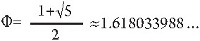
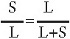
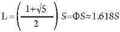
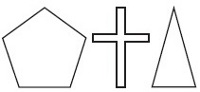

Bir denizyıldızının kollarının, bir kabuklu deniz hayvanının spiralinin ve bir gülün taç yaprağının, Giza Piramidi ve Atina’daki Panteon ile ortak bir yanı vardır. Hepsi de “altın oran” diye bilinen bir sayı çevresinde yapılandırılmıştır. Bu sayı, eserlerinde bunu ustaca kullanan Yunan heykeltıraşı Phidias’tan sonra “fi” olarak bilinmiştir. Matematiksel işaretlemede, “Φ” olarak yazılır. Fi sayısı yaklaşık olarak 1.618’e eşittir, ama bir modelde tekrarlamaksızın sonsuza dek süren ondalıklar anlamına gelen, irrasyonel bir sayıdır.

Fi sayısını nasıl bulduğumuzu yukarıda görebilirsiniz. İki sıralı bölünmelerin, daha kısa sıranın (S) daha uzun sıraya (L) oranı, uzun sıranın iki sıranın toplamına oranına eşit olması durumunda altın oranda olduğu söylenir.

Eğer L’yi ikinci dereceden denklem kullanarak çözersek, şunu buluruz:

Bir altın oranda kurulan cisimler, insan gözünü görsel olarak memnun eder. Sanat ve doğada tekrar ve tekrar ortaya çıkarlar.

Eşkenar bir beşgende, tüm beş kenar uzunlukları eşittir. Bu, kenarların noktalarını bağlayan beş çapraz çizgiye oranının Altın oranda olmasına neden olur. Antik çağ Yunan filozofu Pisagor, eşkenar beşgenden o kadar etkilenmişti ki rakamlara tapan dini tarikatı için gizli bir sembol olarak onu seçmişti.
Haç, ilk kez Gustav Fechner adında bir Alman psikolog tarafından incelenen yaygın bir mezar haçıdır. Fechner, ana gövdenin üst ve alt kısımlarının mükemmel bir altın oranda olduğuna dikkat etti.
Üçgende uzun kenarlar, kısa kenara altın orandadır.
EK BİLGİLER:
1. Mona Lisa’nın yüzünün uzunluğu ve genişliği, altın orandadır.
2. İnsan bedeninin sırrı, altın oranla çözülür.
3. Michelangelo, “Kutsal Aile” resmini bir eşkenar beşgende düzenledi.